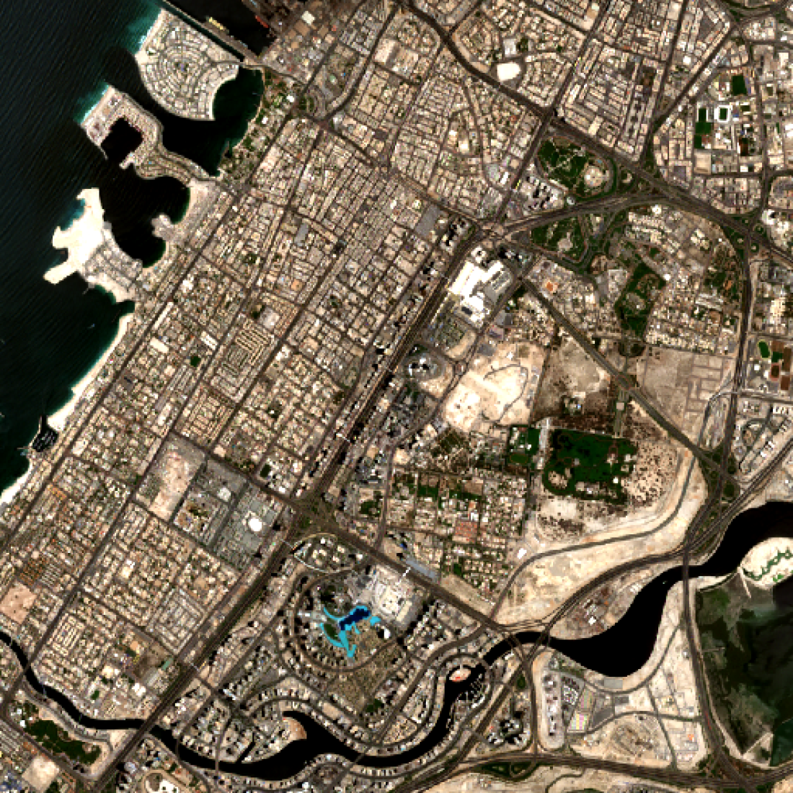
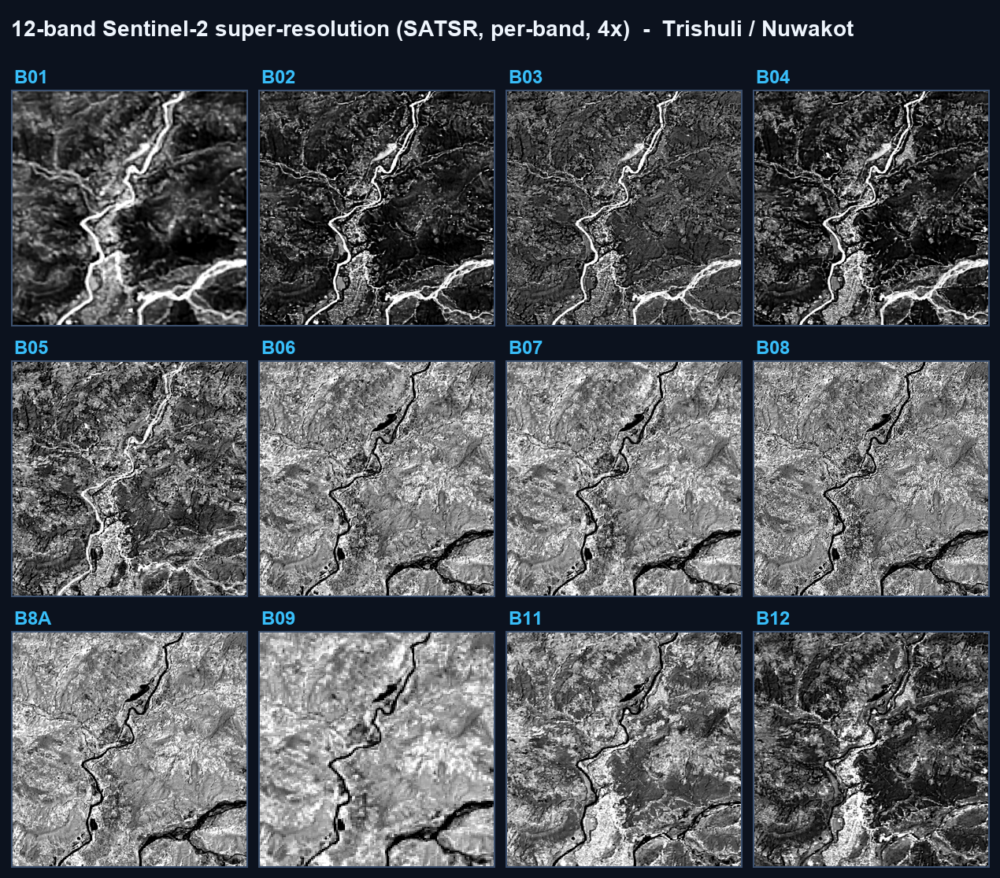
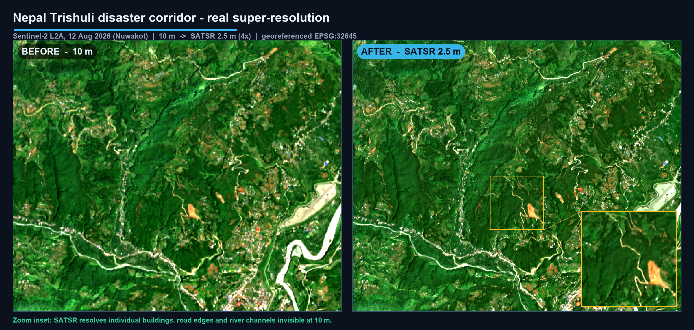
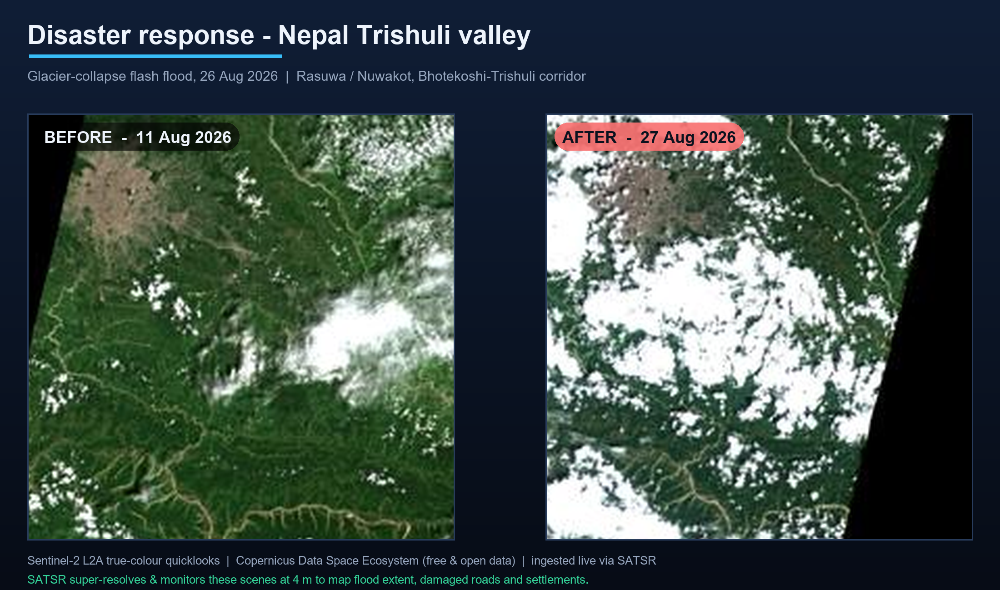

SATSR uses generative AI to super-resolve free 10 m Sentinel-2 imagery into 4 m products — georeferenced, spectrally faithful and uncertainty-flagged — ingested live from Copernicus and delivered on a single 4 GB GPU.
Drag the divider. Left is the raw 10 m Sentinel-2 input; right is the SATSR-enhanced 4 m product of Dubai — the coastal islands, street grid, road networks and waterways sharpen into focus. Ingested live via Sentinel Hub (~5 s) and super-resolved 4× on a single GPU.

A single pipeline takes a free Sentinel-2 scene from raw pixels to decision-ready, georeferenced products — sharpened, spectrally faithful, confidence-flagged and analysis-ready.
A 23-block RRDBNet / Real-ESRGAN backbone reconstructs fine structure — coastlines, road networks, field edges and rooftops — sharpening 10 m imagery to 4 m and beyond (up to 10×), with the CRS and geotransform carried through untouched so every pixel stays map-accurate.
Backbone 23-block RRDBNet · 16.7M params · tiled seam-free streamingNot just RGB — every band is super-resolved independently across the visible, NIR, red-edge and shortwave spectrum. A radiometric correction step pins the output back to the input's reflectance, so colours stay honest and derived indices (NDVI, NDWI, NDBI) hold up at full detail.
Bands B01–B12 + B8A · L2A surface reflectanceAn 8× test-time-augmentation ensemble returns both the estimate and a per-pixel confidence map, flagging where detail is genuinely observed versus statistically inferred. Analysts get a scientific product they can trust — not a cosmetic upscale that hides its own guesses.
Method 8× TTA ensemble · inferno confidence layerSharper inputs unlock sharper analytics: building footprints, road centrelines, water bodies and agricultural field boundaries are detected on the enhanced imagery and exported as clean vectors, ready to drop straight into any GIS or national mapping workflow.
Outputs object & feature detection · GeoJSON vectorsDraw an area on the map or enter coordinates and the platform pulls the freshest low-cloud Sentinel-2 scene on demand — in roughly five seconds — across three redundant routes, so a single provider outage never stalls a mission.
Routes Sentinel Hub · Copernicus CDSE · AWS Earth Search (STAC)INT8 quantization shrinks the model to 17 MB with no measurable loss (SSIM 0.998), so it runs on commodity 4 GB GPUs or plain CPU — deployable on Indian hardware, air-gapped and offline-capable, with no proprietary imagery and no vendor lock-in.
Footprint 17 MB INT8 · 4 GB VRAM · CPU-capableBuilt entirely on open-source software and free open data — no proprietary imagery, no vendor lock-in, deployable on Indian hardware.


Held-out validation against real references, and a quantised model that matches full precision — small enough to deploy widely.

When a glacier collapsed on Nepal's Trishuli, responders had only blurry 10 m pixels. SATSR ingests free Sentinel-2 and sharpens the corridor to 4 m the same day — mapping river channels, roads and settlements for relief planning, at zero imagery cost.